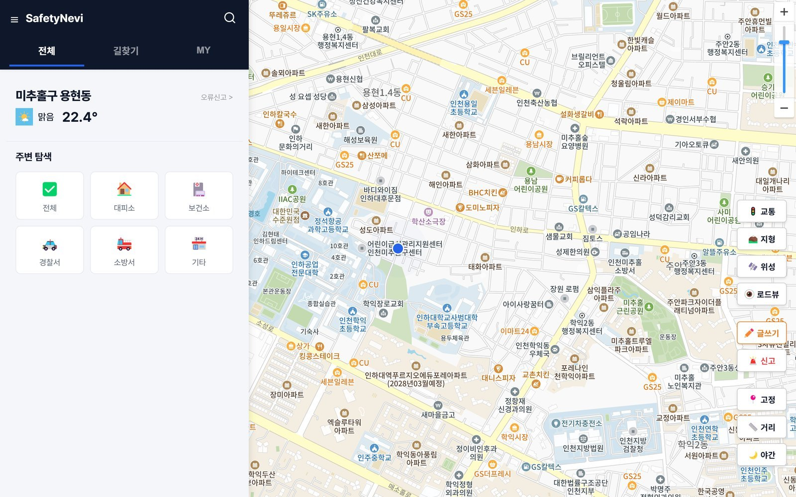
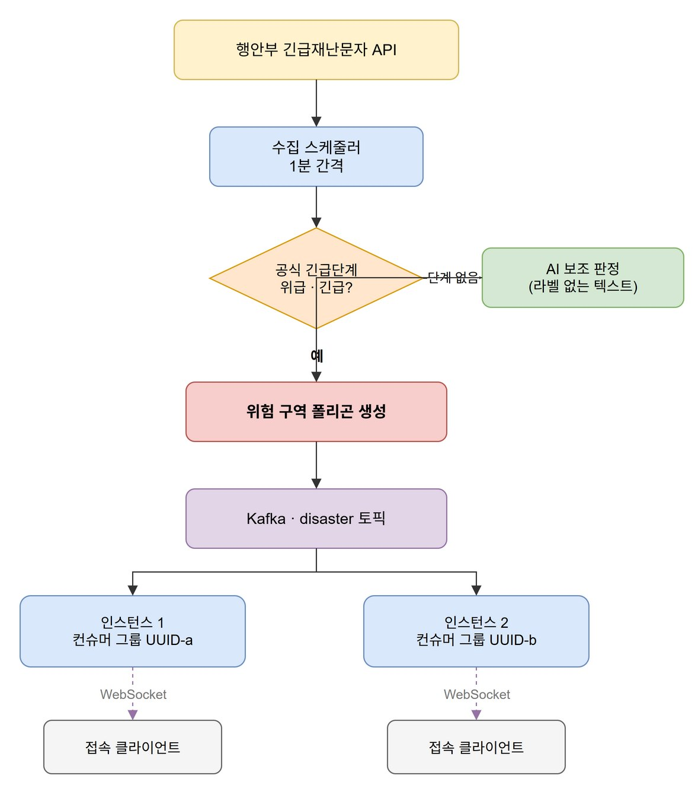
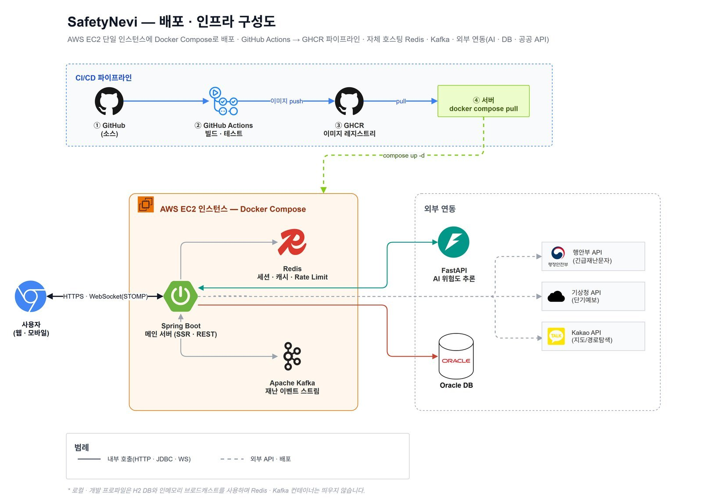

· 4인 팀 졸업작품, Tech Lead · PM · 백엔드
SafetyNevi
재난문자를 지도에 위험 구역으로 표시하고, 가까운 대피소까지 경로를 안내하는 서비스입니다.
- 기간
- 2025년 9월 – 12월
- 형태
- 4인 팀 졸업작품에서 Tech Lead와 PM을 맡았습니다.
- 기술
- Java 21 · Spring Boot 3.5 · WebSocket(STOMP) · Oracle · Python FastAPI · scikit-learn · Redis · Kafka · Docker · GitHub Actions · Kakao Map · Mobility
- 자료
- GitHub 저장소 · 백엔드 PDF

개요
재난문자를 지도 위 위험 구역으로 바꾸고, 가까운 대피소로 안내했습니다
재난문자는 글자뿐이라 내 주변이 위험한지, 어디로 가야 하는지 바로 알기 어렵습니다. 그래서 행정안전부 재난문자를 받아 지도에 위험 구역으로 그리고, 지금 운영 중인 가까운 대피소까지 길을 안내하는 서비스를 만들었습니다. 메인 서버는 Spring Boot이고, 재난문자를 분류하는 AI 서버는 Python FastAPI로 따로 띄웠습니다.
저는 위험 구역과 경로 탐색, 실시간 알림, AI 서버, 배포를 만들었습니다.
| 항목 | 값 | 설명 |
|---|---|---|
| 실제 도메인에서 운영한 기간 | 1주 | 2025년 12월 졸업작품 평가 때입니다. |
| 가는 길까지 살펴 추천하는 대피소 | 3곳 | 위험 구역 안에 있거나 구역을 지나가는 곳은 뺍니다. |
| 시설 조회 한 번의 응답 크기 | 55KB | 387KB였던 응답에서 주소를 빼고 압축을 켰습니다. |
| 위험 문자 재현율 | 1.00 | 평가 데이터 1,202건 기준이고, 정밀도는 0.57입니다. |
재난문자에서 위험 구역까지
재난문자 수집과 위험 구역 생성
팀원이 만든 첫 수집기는 네이버 화면을 긁어 오는 방식이라, 페이지 구조가 바뀌면 바로 깨질 수 있었습니다. 그래서 저는 행정안전부 재난문자와 기상청 단기예보 공식 API에서 데이터를 받도록 바꿨습니다. 공식 API 응답에는 긴급단계 값이 있어서, 이 값이 있으면 AI 분류 없이 위험 여부를 정합니다.

- 위급 · 긴급이면 바로 구역으로긴급단계가 위급이나 긴급이면 60분짜리 위험 구역을 바로 만듭니다. 단계가 없는 문자만 따로 띄운 Python 서버의 분류 모델에 묻습니다.
- 구역 표시는 브라우저에서서버는 재난문자의 수신 지역 이름으로 구역을 만들고, 브라우저가 이 이름을 시군구 경계 GeoJSON에 맞춰 칠합니다.
- DB 커밋이 끝난 뒤에만 알립니다알림을 먼저 보내고 저장이 롤백되면 DB에 없는 재난을 알리게 됩니다. 그래서 WebSocket과 웹푸시는 커밋 뒤에 보냅니다.
- 서버가 여러 대일 때의 알림 전달알림을 Kafka로 보내고 서버마다 컨슈머 그룹을 따로 두어, 어느 서버에 붙어 있든 같은 알림을 받게 했습니다. Kafka와 Redis는 운영 프로파일에서 켜지게 해 두었고, 평가 기간에는 서버 한 대로 돌렸습니다.
DisasterZone saved = disasterZoneRepository.save(zone);
DisasterZoneResponse response = DisasterZoneResponse.from(saved);
afterCommit(() -> {
broadcaster.broadcastNew(response); // 접속 중인 사용자에게
webPushService.notifyNewDisaster(response); // 접속하지 않은 사용자에게
});대피소 추천
위험 구역 안에 있거나 가는 길이 구역을 지나는 대피소는 추천에서 뺐습니다
거리만 보고 고르면 위험 구역 한가운데로 안내할 수도 있습니다. 그래서 관리자가 발령한 원형 위험 구역을 기준으로, 대피소가 구역 안에 있는지와 가는 길이 구역을 지나는지를 같이 봅니다.
- 반경을 넓혀 가며 찾습니다위경도 사각형 범위로 5km, 20km, 100km 순으로 넓혀, 후보가 3곳 이상 나올 때까지 찾습니다.
- 구역 안의 대피소는 뺍니다원 안에 있는 대피소는 아무리 가까워도 뺍니다.
- 가는 길이 구역을 지나도 뺍니다구역 중심에서 출발지와 대피소를 잇는 선분까지의 최단거리가 반지름보다 짧으면, 길이 구역을 가로지른다고 봅니다.
- 남은 후보에서 세 곳을 보여 줍니다운영 중인 곳 가운데 가장 가까운 곳, 거리만 본 가장 가까운 곳, 수용 인원이 가장 큰 곳입니다.
'사용중'만 운영 중으로 보도록 고치고, 이 규칙을 테스트로 고정했습니다.
졸업 뒤 다시 본 부하 테스트
시설 조회 응답을 387KB에서 55KB로 줄였습니다
졸업하고 2026년에 다시 열어 k6로 동시 사용자 60명까지 부하를 걸어 봤더니, 시설 조회 한 번에 1,500건, 387KB가 내려가고 있었습니다. 필드별로 나눠 보니 응답의 4분의 1이 주소였는데, 지도 마커에는 주소가 필요 없습니다. 그래서 목록 전용 DTO를 만들어 주소를 빼고 응답 압축을 켰습니다.
고치기 전
387KB
마커에 쓰지 않는 주소까지 전부 담겨 있었습니다.
목록 전용 DTO와 압축
55KB
같은 1,500건에서 주소를 빼고 압축해 보냅니다.
| 시설 조회 | 전 | 후 |
|---|---|---|
| 응답 크기 | 387KB | 55KB |
| p95 응답 시간 | 569ms | 216ms |
| 처리량 | 초당 347건 | 초당 579건 |
측정 환경: 개인 PC, H2 DB, 서버 1대, k6 최대 동시 사용자 60명. 전후 같은 시나리오로 쟀습니다.
처음에는 압축을 켜도 효과가 잡히지 않았습니다. k6가 Accept-Encoding을 보내지 않고 있어서, 시나리오부터 고쳤습니다.
AI 분류 모델
재난문자 분류 모델의 데이터 누수 수정
재난문자의 위험도를 가르는 모델을 처음 돌렸더니 정확도가 99%였습니다. 값이 지나치게 높아 확인해 보니, 업샘플링을 먼저 하고 학습용과 평가용을 나눈 탓에 같은 문장이 양쪽에 들어가 있었습니다. 순서를 바꿔 데이터를 먼저 나누고, 불균형은 클래스 가중치로 다뤘습니다.
| 항목 | 값 | 설명 |
|---|---|---|
| 재난 종류 분류 데이터 누수를 고친 뒤 | 78% | 재난문자가 어떤 재난에 관한 것인지 가르는 정확도입니다. |
| 위험 문자 재현율 평가 1,202건 | 1.00 | 재현율을 우선했고, 정밀도는 0.57입니다. |
| 학습한 재난문자 위험은 0.8% | 18,399건 | 위험 문자 비율이 낮아서 정확도와 함께 재현율과 정밀도를 봤습니다. |
- AI는 보조로만 씁니다공식 긴급단계가 있는 문자는 모델을 거치지 않습니다.
- AI 서버가 멈춰도 수집은 이어집니다메인 서버는 AI 서버에 연결 3초, 응답 5초 제한을 걸고, 답을 받지 못하면 안전으로 처리해 수집을 계속합니다.
보안
로그인과 웹푸시 구독 API의 보안 보강
- 웹푸시 주소 검사SSRFhttps만 받고 localhost와 IP 주소는 거절해, 서버가 내부망으로 요청을 보내지 않게 했습니다.
- IP마다 한도rate limitAPI는 분당 300건, 푸시 등록은 30건까지 받습니다. X-Forwarded-For는 설정을 켰을 때만 믿습니다.
- 5번 틀리면 잠금lockout대소문자만 바꾼 아이디로 다시 시도해도 같은 계정으로 셉니다.
- 가입 여부 숨기기enumeration비밀번호 찾기에서 없는 계정에도 가짜 질문을 보여 줍니다.
배포
GitHub Actions와 Docker Compose 배포
AWS EC2 한 대에 Docker Compose로 배포했습니다. GitHub Actions가 테스트를 돌리고 이미지를 만들어 GHCR에 올리면, 서버가 그 이미지를 받아 교체합니다. 비밀번호와 키는 이미지에 넣지 않고, 서버에 둔 설정 파일로 따로 넣었습니다.

- 테스트 통과 후 이미지 빌드서버 테스트와 프론트 타입 검사를 통과해야 이미지를 만듭니다.
- 서버는 이미지만 받습니다서버에서는 빌드하지 않고,
docker compose pull로 받아 다시 띄우기만 합니다. - 상태 확인 엔드포인트Actuator의 health · liveness · readiness와 Prometheus 지표를 열어 두었습니다.
- 로컬은 Docker 없이도로컬과 테스트는 H2와 메모리 구현으로 바로 뜹니다.
팀과 역할
지도 · AI 서버 · 배포는 제가, 게시판과 화면은 팀원이 맡았습니다
제가 한 일
- 지도위험 구역과 경로 탐색, WebSocket 실시간 알림
- AI 서버Python 서버와 재난문자 분류 모델
- DB와 관리자팀원과 함께 짠 Oracle 스키마, 관리자 기능
- 운영 보강과 배포공식 API 전환, Redis · Kafka, CI/CD, 관측, 보안, Docker 배포
팀원이 맡은 일
- 백엔드처음 재난문자 수집기, 게시판 · 공지 · 문의 API
- 프론트엔드전체 화면 퍼블리싱과 반응형, 로고 · 아이콘, 회원 화면
- 콘텐츠재난 행동요령 콘텐츠, 테스트 데이터셋